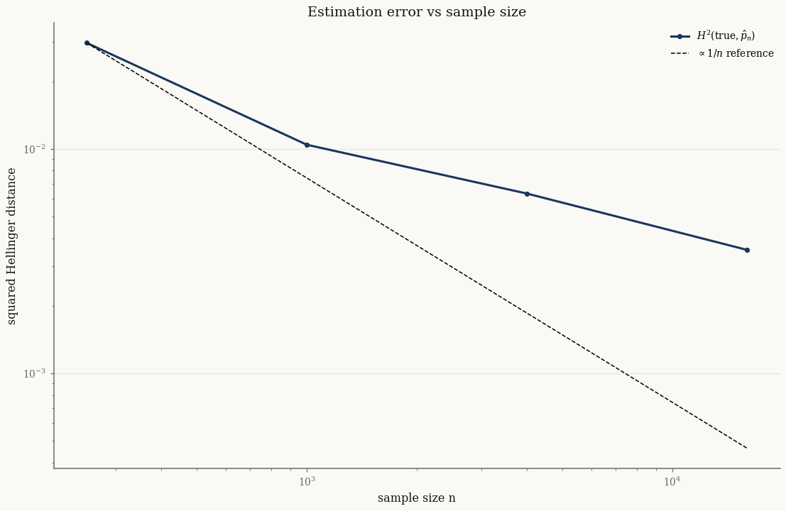

Divergences between models#
How far apart are two fitted distributions? normix provides two information divergences as first-class operations: the squared Hellinger distance \(H^2\) and the Kullback–Leibler divergence \(D_{\mathrm{KL}}\). Both have closed forms for exponential families in terms of the log-partition \(\psi\), so they are exact and differentiable — no Monte Carlo.
import jax
jax.config.update("jax_enable_x64", True)
import jax.numpy as jnp
import numpy as np
from normix import (
Gamma, NormalInverseGaussian,
squared_hellinger, kl_divergence,
squared_hellinger_from_psi, kl_divergence_from_psi,
)
from normix.utils.plotting import set_theme
set_theme()
np.set_printoptions(precision=5, suppress=True)
Hellinger and KL on distributions#
The convenience API takes two distributions of the same family:
p = Gamma(alpha=jnp.array(2.0), beta=jnp.array(1.5))
q = Gamma(alpha=jnp.array(2.5), beta=jnp.array(1.2))
print("H²(p, p) =", float(squared_hellinger(p, p))) # identity → 0
print("H²(p, q) =", float(squared_hellinger(p, q)))
print("H²(q, p) =", float(squared_hellinger(q, p))) # symmetric
print()
print("KL(p ‖ q) =", float(kl_divergence(p, q)))
print("KL(q ‖ p) =", float(kl_divergence(q, p))) # asymmetric
H²(p, p) = 0.0
H²(p, q) = 0.057611811187182504
H²(q, p) = 0.057611811187182504
KL(p ‖ q) = 0.23114958120921036
KL(q ‖ p) = 0.24560834722128277
\(H^2\) is a bounded, symmetric distance in \([0, 1]\); KL is an asymmetric divergence in \([0, \infty)\). Hellinger is the better choice when you want a metric-like comparison between models.
The functional *_from_psi core#
The distribution-level functions are a thin layer over a functional core that works directly with the log-partition \(\psi\) and natural-parameter vectors. This is the layer the EM and optimization code calls internally:
squared_hellinger_from_psi(psi, theta_p, theta_q)kl_divergence_from_psi(psi, grad_psi, theta_p, theta_q)
Feeding it a distribution’s own \(\psi\) reproduces the convenience result exactly:
psi = Gamma._log_partition_from_theta # ψ(θ)
grad_psi = Gamma._grad_log_partition # ∇ψ(θ) = η
theta_p, theta_q = p.natural_params(), q.natural_params()
print("H² convenience :", float(squared_hellinger(p, q)))
print("H² from_psi :", float(squared_hellinger_from_psi(psi, theta_p, theta_q)))
print("KL convenience :", float(kl_divergence(p, q)))
print("KL from_psi :", float(kl_divergence_from_psi(psi, grad_psi, theta_p, theta_q)))
H² convenience : 0.057611811187182504
H² from_psi : 0.057611811187182504
KL convenience : 0.23114958120921036
KL from_psi : 0.23114958120921036
Because the core takes a plain callable, you can differentiate through it — for example to take gradients of \(H^2\) with respect to natural parameters:
grad_H2 = jax.grad(lambda th: squared_hellinger_from_psi(psi, th, theta_q))(theta_p)
print("∂H²/∂θ_p =", np.asarray(grad_H2))
∂H²/∂θ_p = [-0.12021 -0.15706]
Hellinger as estimation error#
A natural use of \(H^2\) is to measure how far a fitted model is from the true one. As the sample size grows, the EM estimate converges and the Hellinger distance to the truth shrinks:
true = NormalInverseGaussian.from_classical(
mu=jnp.array([0.0, 0.0]),
gamma=jnp.array([0.4, -0.3]),
sigma=jnp.array([[1.0, 0.3], [0.3, 1.0]]),
mu_ig=1.0, lam=1.5)
ns = [250, 1000, 4000, 16000]
h2 = []
for n in ns:
X = true.rvs(n, seed=0)
fit = NormalInverseGaussian.default_init(X).fit(
X, max_iter=120, tol=1e-4, e_step_backend="cpu").model
h2.append(float(squared_hellinger(true, fit)))
print(f"n = {n:6d} H²(true, fit) = {h2[-1]:.5f}")
n = 250 H²(true, fit) = 0.02965
n = 1000 H²(true, fit) = 0.01043
n = 4000 H²(true, fit) = 0.00632
n = 16000 H²(true, fit) = 0.00355
import matplotlib.pyplot as plt
fig, ax = plt.subplots()
ax.loglog(ns, h2, "o-", label="$H^2(\\text{true}, \\hat{p}_n)$")
ax.loglog(ns, h2[0] * ns[0] / np.array(ns), "k--", lw=1, label="$\\propto 1/n$ reference")
ax.set_xlabel("sample size n"); ax.set_ylabel("squared Hellinger distance")
ax.set_title("Estimation error vs sample size")
ax.legend()
plt.show()

The fitted-model error tracks the \(1/n\) reference line — the expected parametric rate.
Takeaways#
squared_hellinger(p, q)is a bounded symmetric distance;kl_divergence(p, q)is an asymmetric divergence — both closed-form for exponential families.The
*_from_psifunctional core takes \(\psi\) and natural-parameter vectors, is differentiable, and underlies the convenience API.\(H^2\) to a reference model is a clean diagnostic for estimation error and model comparison.
Next: Goodness of fit turns to per-sample diagnostics — QQ plots, CDF overlays, and KS tests — on synthetic and real data.